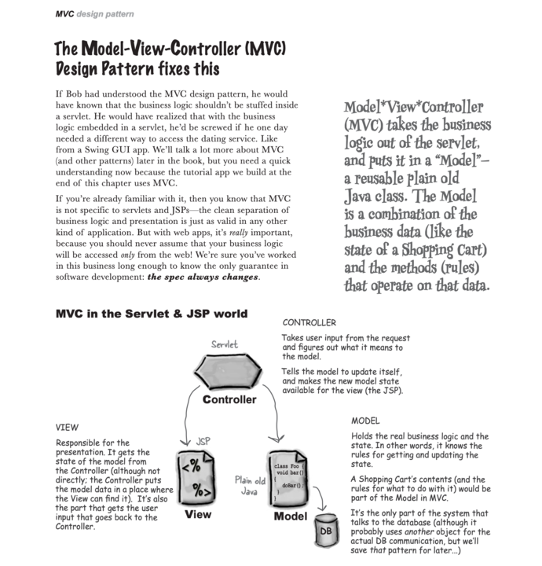

day0913
- 代码演示与点评
- 发现严重问题 ‼️
- 之前的任务没做完善
- 在不稳的地基上改代码，摇摇欲坠
- 解决办法
- 停下当前进度
- 弥补之前遗留的问题，打牢地基
- 端正态度，再起航
day0912
- 根据 `commit log` 还原代码
- PostMapperTest@selectByConditionWithMap
- PostMapperTest@selectByConditionWithObject
- PostMapperTest@selectByConditionWithParam
- testSqlStatementWithSpecialTag
- PostMapperTest@selectById
- resultMap
- <sql id="select-column"> ...
- assertNotNull(....getCreatedAt());
- assertNull(xxx.getCreatedAt());
- X
- PostMapperTest@selectAll
- update logback.xml
- PostMapperTest
- add O/R
- 完成博客列表页面展示
参考昨天发到群里的博客列表图片
- 完成博客详情页面展示
参考昨天发到群里的博客详情图片
- Step 1 显示原始内容
内容区域展示最原始的 markdown 内容
- Step 2: 手动转换 markdown
手动将 markdown 内容转成 html
验证详情页面侧边栏的 TOC 是否能正常显示
- Step 3: 自动转换 markdown
markdown --auto--> html
思路：
- Server --- Java
- Client (Browser) --- JavaScript
day0911
博客系统之准备阶段
- 表设计：根据页面原型图设计出相应的数据库表
- 复习之前学过的知识，至少写出3篇笔记。写完之后用SQL语句插入到上一步设计的表
- 参考静态html页面，增加博客列表和详情页面
- 目的
- 复习表设计
- 养成记笔记的习惯
- 练习将静态页面转成动态页面
day0908
- 代码演示与点评
- 各自根据存在的问题，动手改进它
- 阅读纯英文的资料书：Head First Servlets and JSP - Second Edition
day0907
- 昨天布置的任务，半天做不完，今天继续完成。
- 认识MVC架构

day0906
- 特殊情况。上午突遇暴雨 + 城市内涝
- Practice & Answer questions
- 同时支持JDBC和MyBatis两种方式操作数据库【抽象它】
- 增加【用户搜索】和【批量删除】的功能，两种实现方式都要能够支持新增加的功能
- 验证码同时支持图片验证码和邮件发送接收验证码
- 目的：
- 代码训练
- 思考系统的架构
- 抽象的能力
- 应对需求变更的能力
- 提升系统的可扩展、可维护性
day0905
- pattern property
- file appender
- console appender
- LoggerAnnotation
- GetLogger
- parameterized messages
- logback-classic
- LogVsSout
- To switch logging frameworks, just replace slf4j bindings on your class path.
- SLF4J with Simple provider
- SLF4J with NOP provider
- Hello SLF4J
day0904
day0901
- ServletContextListener
- HttpSessionAttributeListener
- HttpSessionListener
day0831
-
testFilter
- 来自源码注释：A filter is an object that performs filtering tasks on either the request to a resource (a servlet or static content), or on the response from a resource, or both.
- before、chain.doFilter...、after
- multi filters, order, web.xml, filter-mapping, xml element order
- ...
day0830
day0829
day0828
day0825
day0824
day0823
- Code demonstration & Review
- JDBC update、delete、batchAdd、transactions
- Practice & Answer questions - ref: day0823/readme.md
day0822
day0821
day0818
day0817
Response
day0816
index page
login page
Request